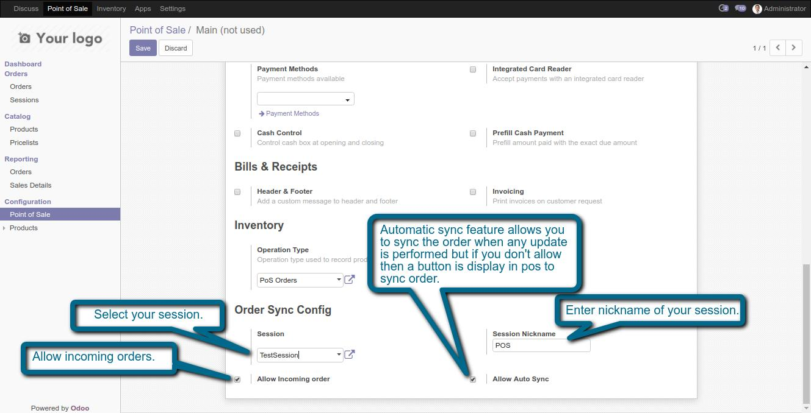
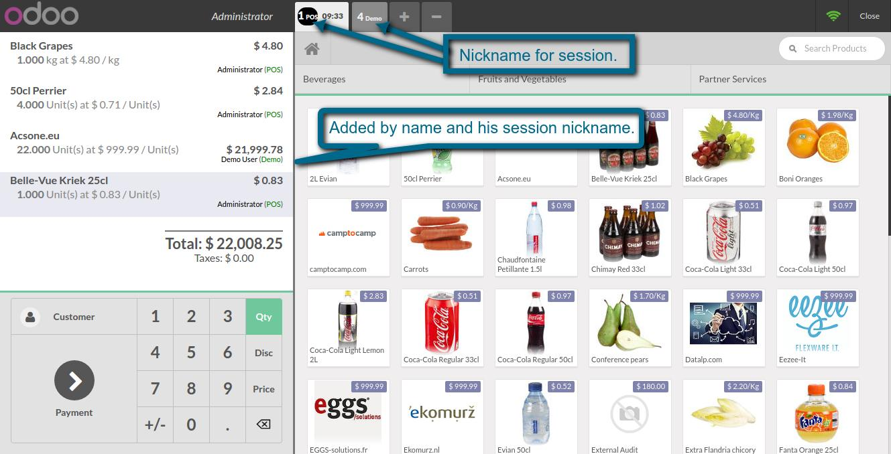
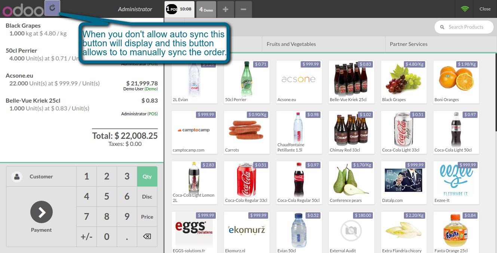

POS Sync Order
Easy way to sync order to different sessions
Features
- We can easily sync orders to different sessions.
- There is automatically and manually sync feature also
- You can use manually order sync feature when order is changing according to situation like waiter is taking order.
- When your system is off or network is down your order will not destroy. Order will automatically recover when you start your POS.
1. Configuration Part of POS Sync.

2. Order will sync like this.

3. Manually sync order.

If You Need Any Help Please Contact
Email Id: dev.webveer@gmail.com